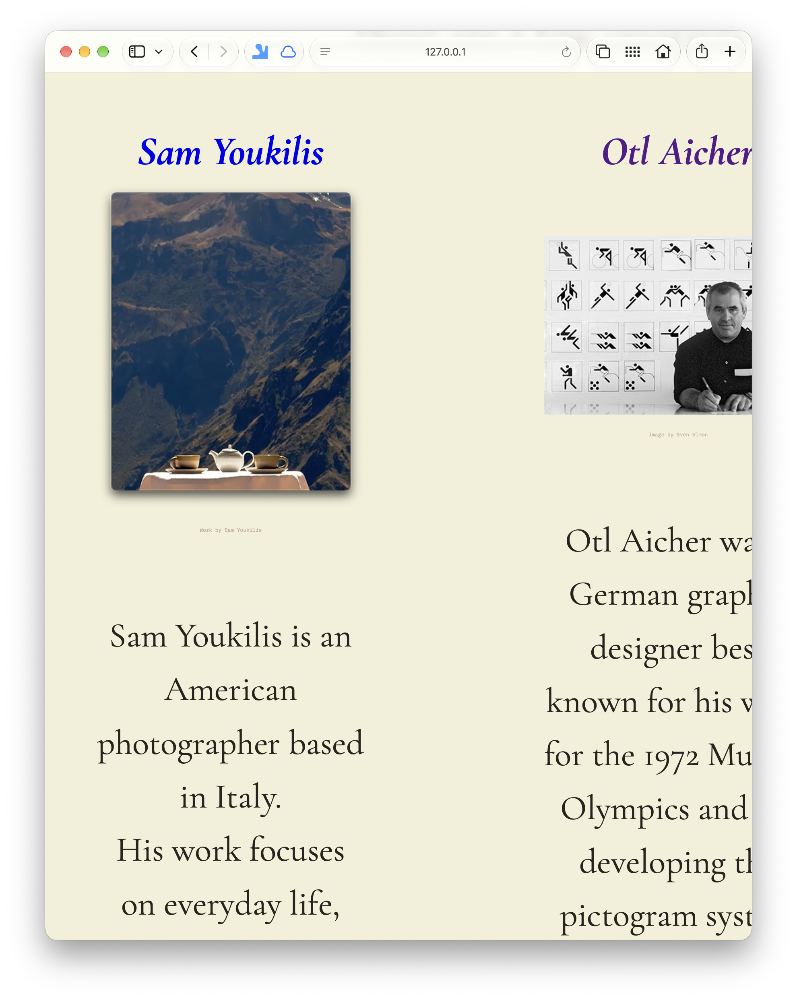
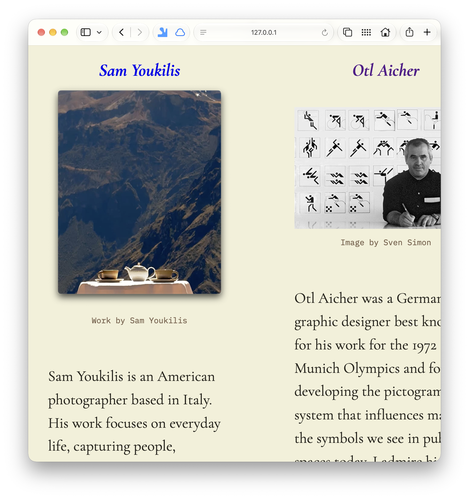
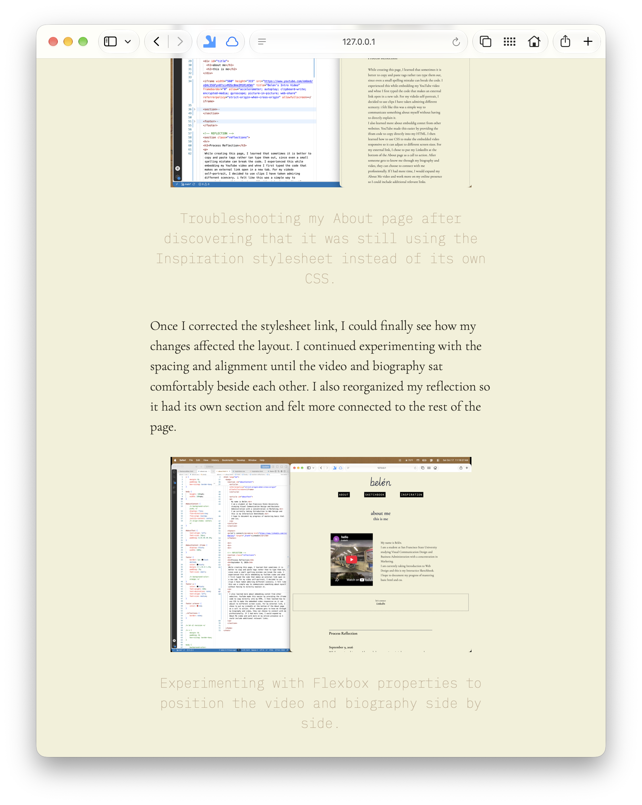
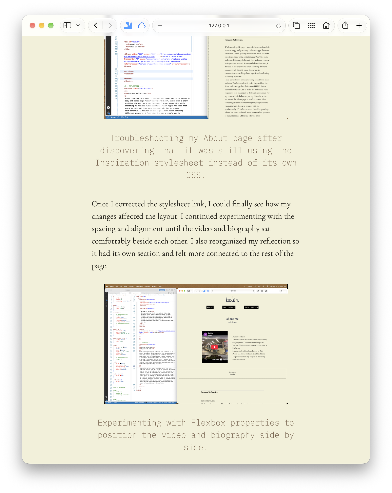
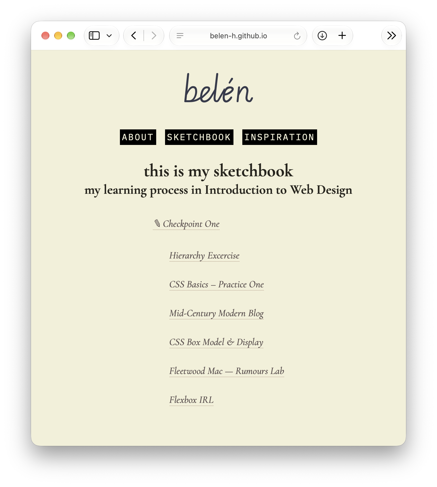
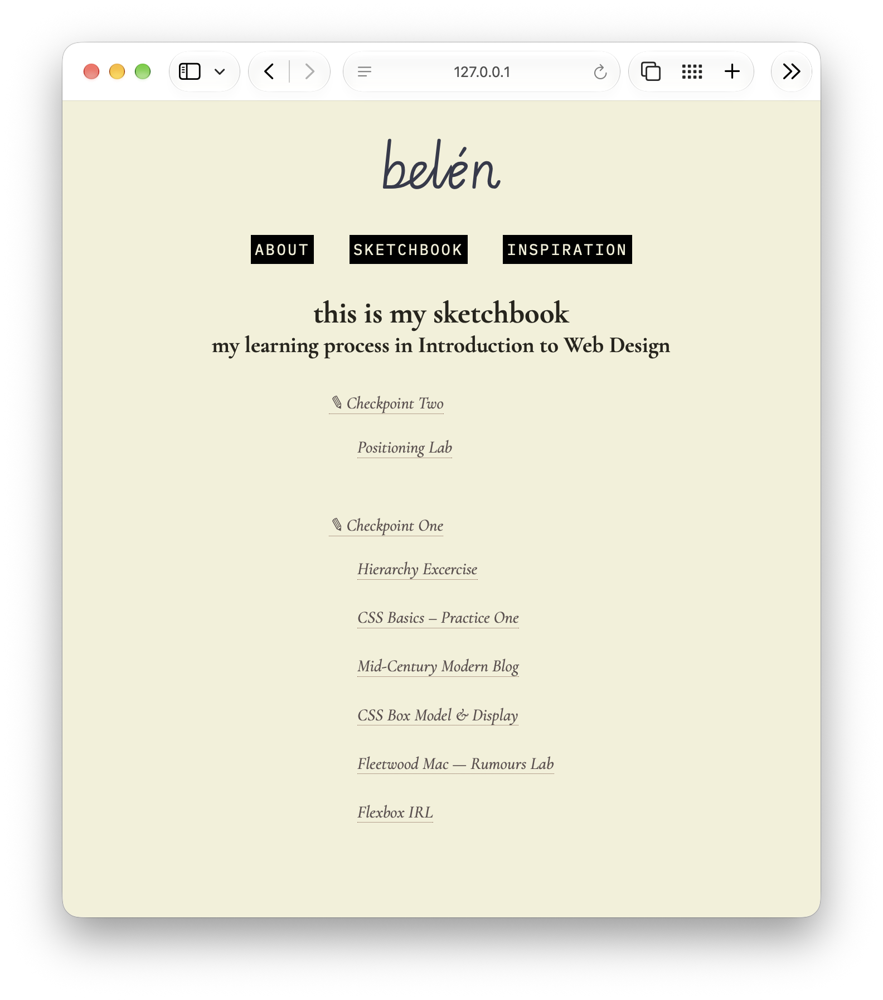
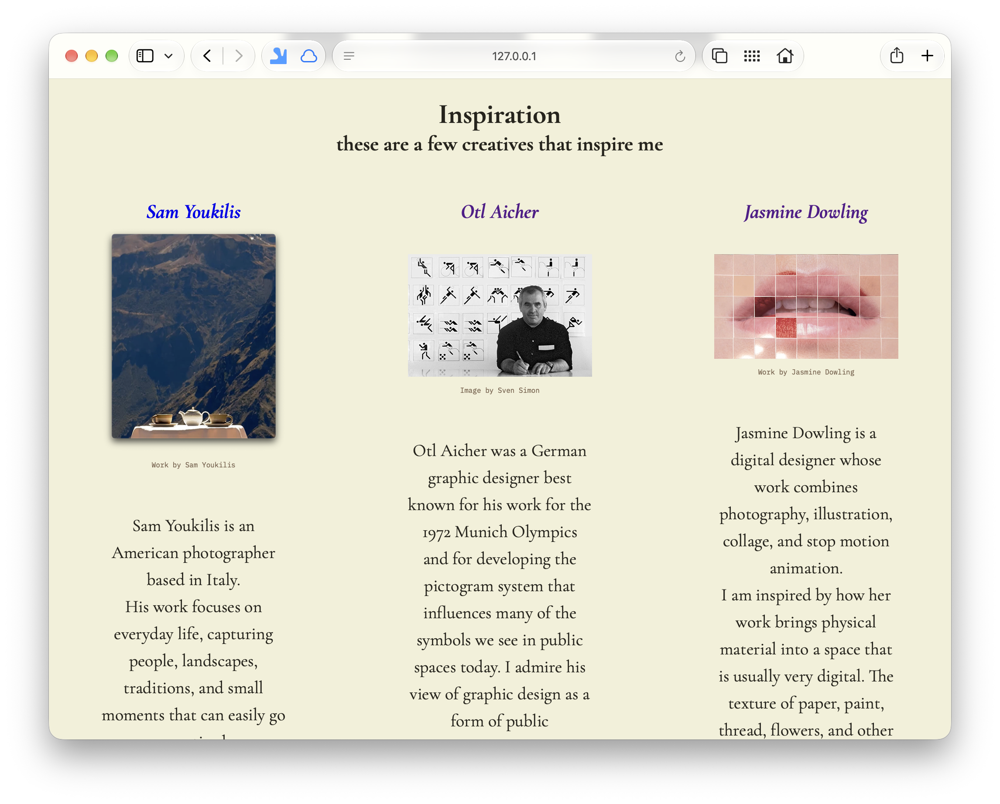
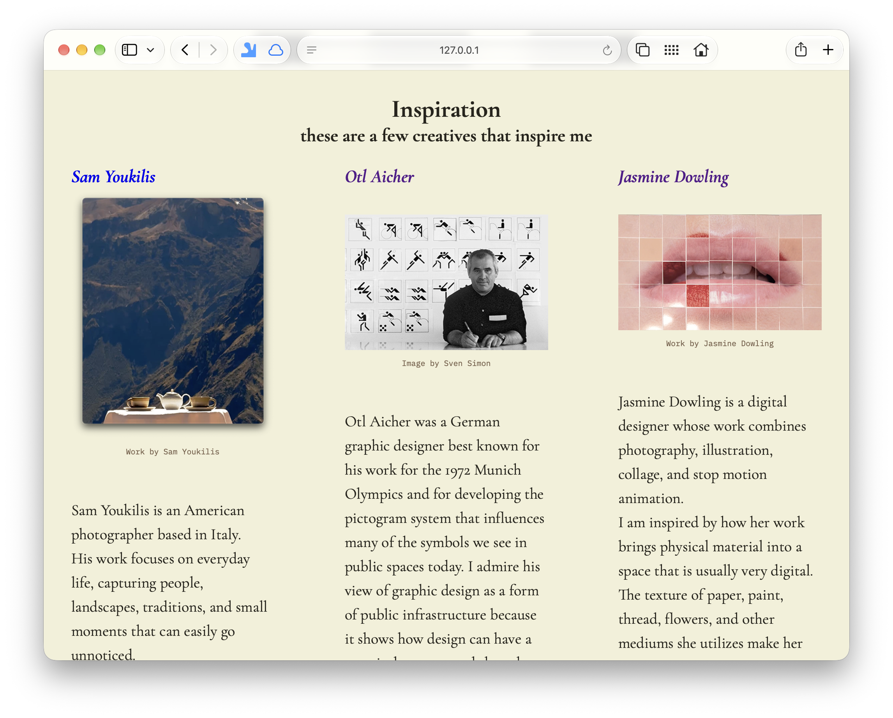

Assessment Two: Revision After Peer Review
October 28, 2026
I received mostly positive feedback from Samantha about my website's visual style, navigation and organization. She mentioned that some image captions were difficult to read and the my black navigation buttons sometimes compete with the page headings. I completely agreed with her about the readability, but decided to keep th navigation buttons because I like their label maker inspired appearance and feel they work well with the rest of my website.
Revision One: Improving Caption Readability
I started by adjusting the image credits on my Inspiration page. They were originally so small and light that they were barely noticeable. I experimented with the font size and darkened the color until they were easier to distinguish from the background while still remaining subtle.

Before: The image credits were so small and light that they were difficult to read against the background.

After: I increased the caption size and darkened the color to improve readability while keeping the credits visually subtle.
I also realized that the captions in my process reflections had a similar problem. Since both used the shared baseStyle.css stylesheet, I improved their readability without having to edit each page individually.

Before: My process documentation captions had a similar readability problem.

After: I updated the caption styling in my shared stylesheet to make my process documentation easier to read.
Revision Two: Organizing my Sketchbook Navigation
As I began Checkpoint Two, I reorganized my Sketchbook navigation to prepare for future checkpoints. I wanted the exercises grouped underneath their corresponding checkpoints so I could see my assignment progression as I learned new skills throughout the semester.
At first, I had trouble aligning the checkpoint headings and exercises. Changing align-items: center to align-items: flex-start helped me achieve the layout I wanted.

Before

After: I reorganized the navigation into checkpoint sections with indented exercises
Revision Three: Improving the Inspiration Page Layout
While revisiting the Inspiration page, I noticed that the artist descriptions were difficult to follow because the centered text created narrow lines. I reduced the padding and changed the text alignment from centered to left-aligned.

Before: Centered descriptions and larger padding created narrow columns with frequent line breaks.

After: I reduced the padding and left-aligned the descriptions.
Looking Back
Having someone else review my website helped me notice small details I had overlooked. Going back and making changes made me realized how quick and easy it is with shared style sheets.